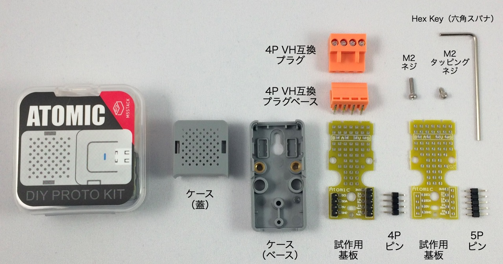
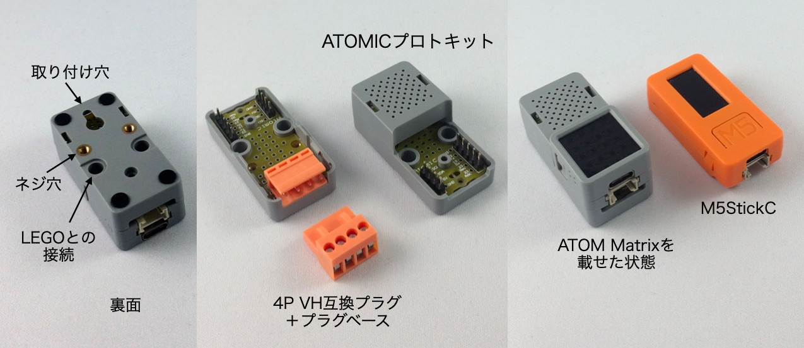
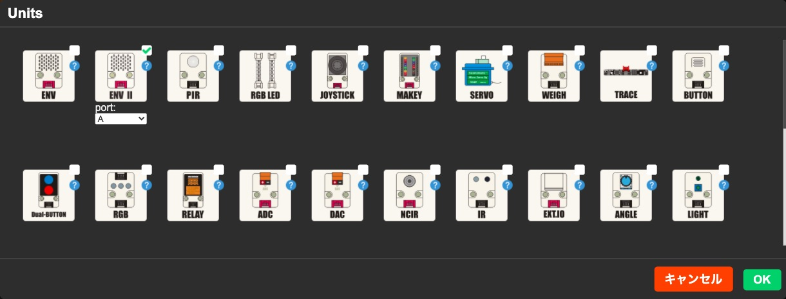

M5Stack社の製品にまつわる新情報をまとめてお届けする「M5Stackマンスリーアップデート」のコーナーです。
2020年6月は次の製品の販売が始まりました。

|
ATOMシリーズでスピーカーとマイクが内蔵されたモデル。 |

|
ATOMシリーズ向けに設計された、簡単なプロトタイプを開発するのに便利なキット。 |

|
M5Stack用環境センサユニット ver.2（ENV II） 温度/湿度/気圧が測定できる環境センサ。 |
ATOM Echo は6月の号外 で紹介したので、今月はATOMICプロトキットとM5Stack用環境センサユニット ver.2（ENV II）を紹介します。
AATOMICプロトキットは、ATOMシリーズ向けに設計された、簡単なプロトタイプを開発するのに便利なキットです。
キットは黒いシールの貼られたケースに入っていて、中には次のものが含まれています。

ATOMシリーズは基板上の4Pと5Pのピンで接続します。ケースの大きさは47 x 34 x 18 mmで、長さ、幅はM5StickCとほぼ同じです。

ATOMICプロトキットにはATOM Matrixは含まれていません
試作用基板には50ホールのエリアがあり、はんだ付けが必要ですが、簡単な回路が作れます。オレンジ色の4Pコネクタは配線をネジ止めできるようになっていて、外部にセンサなどをつけるときに便利です。
小さなセンサ端末やコントローラを試作するときに便利に使えるキットです。
「M5Stack用環境センサユニット ver.2（ENV II）」は、ENV IIという名前が示すように、以前あった「M5Stack用環境センサユニット」の後継品です。「M5Stack用環境センサユニット」は搭載されていた温湿度センサDHT12が製造中止になったため販売が終了され、「ENV II」は温湿度センサがSHT30というセンサに変わりました。気圧センサは新旧ともBMP280というセンサが使われています。新旧のスペックを比べてみました。
「ENV II」の方が温度の測定範囲が広がり、湿度、気圧の測定はほぼ同スペックなので、より使いやすくなったと思います。
「M5Stack用環境センサユニット ver.2（ENV II）」をアクセスするために、ArduinoのライブラリとUI Flowのブロックが用意されています。
Arduinoは原稿を書いている7月8日時点の最新版M5Stackライブラリ（0.3.0）のスケッチ例には、ENVセンサの例は含まれていますが、ENV IIの例はまだ含まれていません。GithubにはENV IIをアクセスするプログラムが公開されているので、これを使えば、ENV IIにアクセスできます。
https://github.com/m5stack/M5-ProductExampleCodes/tree/master/Unit/ENVII/Arduino/ENVII
このURLにある ENVII.ino 、 Adafruit_Sensor.h 、 SHT3X.cpp 、 SHT3X.h の4つのファイルをダウンロードして、Arduino IDEで ENVII.ino を開くと、サンプルプログラムが見られます。「ENV II」をアクセスするには、次のように温湿度センサSHT30と気圧センサBMP280のオブジェクトを作り（①、②）、BMP280は bme.begin(0x76) で初期化をおこないます（③）。BMP280は readPressure というメソッドで気圧データを読むことができます（④）。SHT30は最初に get メソッドでセンサデータを読み（⑤）、次に cTemp と humidity というメソッドで温度と湿度を取得できます（⑥、⑦）。
SHT3X sht30; // ①
Adafruit_BMP280 bme; // ②
void setup() {
bme.begin(0x76); // ③
}
void loop() {
float tmp;
float hum;
float pressure;
pressure = bme.readPressure(); // ④
if(sht30.get()==0){ // ⑤
tmp = sht30.cTemp; // ⑥
hum = sht30.humidity; // ⑦
}
}
UI Flowは最新版のV1.5.4はENV IIに対応しています。UI Flow（ https://flow.m5stack.com/ ）画面左のUnitの選択ボタン「＋」をクリックすると、ENVユニットの右にENV IIが現れます。

ENV IIを選択すると、画面中央の「Units」メニューに「環境」が追加され、そこをクリックすると温度、湿度、気圧を取得するブロックが現れます。
次のようなプログラムでENV IIユニットから60秒ごとに温度、湿度、気圧を読み取ってLCD画面に表示できます。